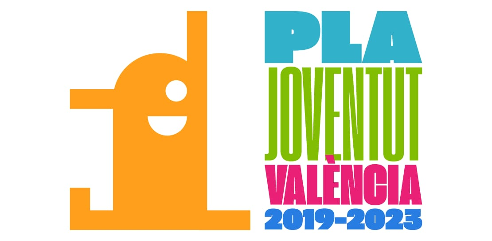

Somos una asociación juvenil sin animo de lucro, con sede en el barrio del Grao, en la ciudad de València. Dentro de la Asociación contamos con un grupo scout, que desde noviembre de 1971 trabaja con niños y jóvenes, aplicando el metodo scout, el Escultismo (regido por las normas internacionales scouts), un proyecto educativo mundial con más de un siglo de antigüedad. Educamos en valores mediante juegos, acampadas y diferentes tipos de actividades lúdicas.
Todo esto para que, el día siguiente, nuestros scouts sean adultos plenamente integrados en la sociedad, con personalidad propia y un espíritu de compromiso constructivo. Centenares de jóvenes han pasado por nuestra Asociación, creciendo en un ambiente sano y seguro, rodeados de amigos y aprendiz a vivir tanto en la ciudad como la naturaleza.
Nuestro Grupo Scout se divide por secciones, que agrupan a los niños y jóvenes por edades, adaptando las actividades a sus necesidades y gustos. Los JÓVENES CASTORES son niños y niñas de 5 a 8 años, mientras que a la MANDADA estàn los que tienen entre 8 y 11 años. En la TROPA los niños de 11 a 15 años se dividen en cuatro grupos denominados patrullas: dos de chicas y dos de chicos. La ESCUCHA la forman nuestros jóvenes de 15 a 18 años. Finalmente encontramos el CLAN para los mayores de 18.
Esta se nuestra página web, en ella encontrarás noticías, fotos, enlaces a contenido de interés, información de nuestras actividades, revistas, o la forma de contactar con nosotros. ¡Bienvenidos!
La Presidencia y el Comité ponen en conocimiento de los socios la siguiente información:
Informació institucional, organitzativa y de
planificación
Informe Economico de la Associación 2019
Informe Economic de la Associación 2018